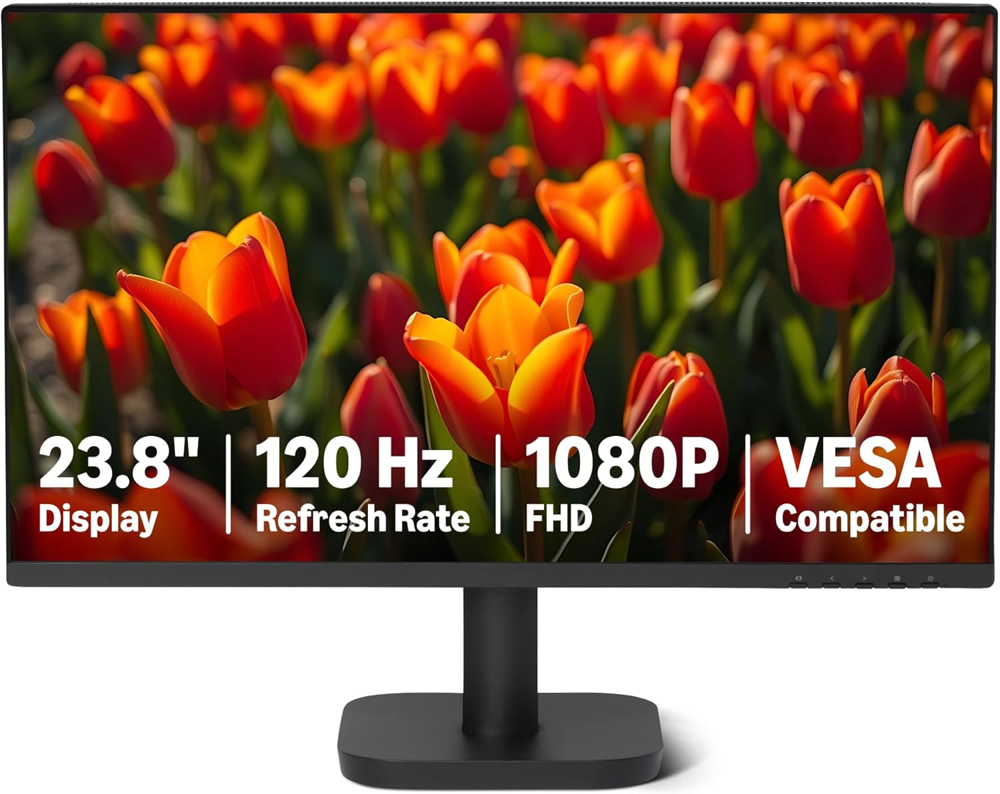

Due monitor economici molto popolari su Amazon: il KOORUI 24E6C (curvo, 165Hz) e l'Amazon Basics 23.8" (IPS, 120Hz). Ecco un confronto diretto per capire quale fa al caso tuo.
KOORUI Gaming Monitor 24E6C — €104,99
Monitor curvo da 23.6" con pannello VA, risoluzione FHD (1920×1080), refresh rate a 165Hz e tempo di risposta di 1ms. Curvatura 1800R, copertura DCI-P3 90%, contrasto 3000:1. Ingessi: HDMI 1.4 (144Hz), DP 1.2 (165Hz), audio out.
Amazon Basics Monitor 23.8" — €80,09

Monitor piatto da 23.8" con pannello IPS, risoluzione FHD (1920×1080), refresh rate a 120Hz con Adaptive Sync, tempo di risposta di 14ms. Copertura sRGB 99%, contrasto 1500:1. Include altoparlanti integrati 2W×2. Ingressi: HDMI 1.4, DP 1.2, VGA, audio out. Tecnologia LowBlue Light e Flicker-Free.
Pro e Contro
KOORUI 24E6C
| Pro | Contro |
|---|---|
| 165Hz — molto fluido per gaming competitivo | Pannello VA (angoli di visione inferiori all'IPS) |
| 1ms response time — ottimo per gaming | Senza altoparlanti integrati |
| Curvatura 1800R — esperienza immersiva | Solo HDMI 1.4 (limita a 144Hz su HDMI) |
| Contrasto 3000:1 — neri profondi | Supporto solo tilt, nessuna regolazione in altezza |
| Design sottile e moderno |
Amazon Basics 23.8"
| Pro | Contro |
|---|---|
| Pannello IPS — colori vividi e angoli di visione ampi | 14ms response time — non ideale per gaming competitivo |
| Prezzo più basso (€80,09) | 120Hz vs 165Hz del KOORUI |
| Altoparlanti integrati — non serve audio esterno | Pannello piatto (meno immersivo) |
| LowBlue Light + Flicker-Free — affaticamento ridotto | Contrasto inferiore (1500:1 vs 3000:1) |
| Cornici sottili su 4 lati — ideale multi-monitor | |
| Ingresso VGA per vecchi dispositivi |
Opinioni degli Acquirenti
KOORUI 24E6C (4,5★ — 2.203 recensioni)
Good: Gli utenti apprezzano l'ottimo rapporto qualità-prezzo, la fluidità del 165Hz, la curvatura immersiva e la qualità costruttiva. Molti lo consigliano per gaming (FPS, racing) e come monitor principale economico. La resa cromatica DCI-P3 90% viene giudicata sorprendente per la fascia di prezzo.
Bad: Qualche segnalazione di dead pixel all'arrivo (coperto da garanzia), angoli di visione del VA non eccellenti, e l'assenza di altoparlanti integrati obbliga a cuffie o casse esterne. La regolazione è limitata al solo tilt.
Amazon Basics 23.8" (4,7★ — 156 recensioni)
Good: Gli acquirenti lodano la qualità dell'IPS, la nitidezza del testo (ottimo per ufficio/programmazione), il design pulito e le cornici sottili. La funzione LowBlue Light riduce l'affaticamento dopo ore di lavoro. Gli speaker integrati sono un plus gradito. Ottimo per configurazioni multi-monitor grazie ai bordi minimi.
Bad: Il tempo di risposta di 14ms viene notato in gaming veloce (effetto scia). Qualche utente segnala istruzioni di montaggio poco chiare. Il supporto è solo basculante, non regolabile in altezza. La luminosità massima è nella media, non eccellente per ambienti molto luminosi.
Verdetto
| Scenario | Scelta migliore |
|---|---|
| Gaming competitivo (FPS, racing) | KOORUI 24E6C — 165Hz e 1ms |
| Ufficio / Programmazione / Studio | Amazon Basics — IPS, occhi meno affaticati |
| Configurazione multi-monitor | Amazon Basics — cornici sottili su 4 lati |
| Film / Intrattenimento | KOORUI 24E6C — curvo e contrasto elevato |
| Budget ridotto | Amazon Basics — €24 in meno |
| Gaming occasionale + lavoro misto | KOORUI 24E6C — più versatile |
Se giochi o guardi film, il KOORUI 24E6C offre un'esperienza migliore grazie al 165Hz e alla curvatura. Per lavoro d'ufficio, programmazione o chi cerca il massimo risparmio, l'Amazon Basics è la scelta più intelligente grazie al pannello IPS e agli altoparlanti integrati.